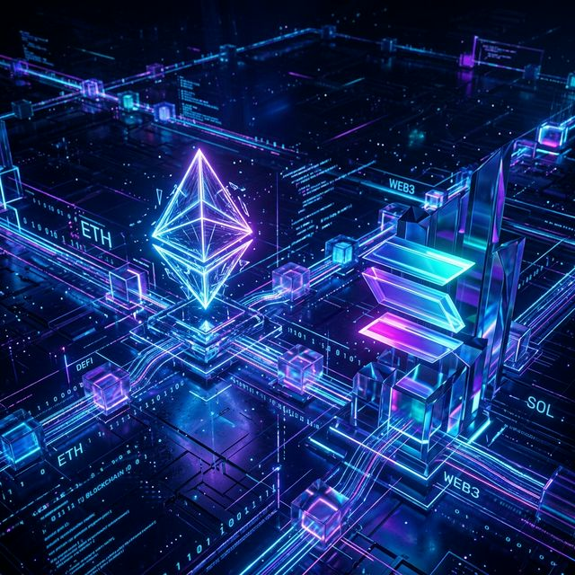

EigenLayer Liquid Restaking Protocols: Yield Comparison & Guide for 2026

Liquid restaking builds on traditional staking by allowing users to earn extra rewards from Actively Validated Services (AVSs) without locking capital. EigenLayer leads this sector on Ethereum, while protocols like Jito on Solana offer MEV-enhanced liquid staking in a different ecosystem.
Both approaches improve capital efficiency, but they differ in yield sources, risks, and use cases. This guide breaks down the mechanics, compares key options, and shows practical applications for traders and liquidity providers in 2026.
Liquid Restaking Snapshot (April 2026)
- 📊 EigenLayer TVL: $18B–20B+ with 1,900+ operators
- 📈 Typical yields: Base ETH staking (~3.5–4%) + AVS rewards (2–5%+, variable)
- ⚡ JitoSOL (Solana): ~5.8–6.0% APY (MEV-boosted staking)
- 💰 Fees: Usually sub-1% performance fee on extra rewards
Why Liquid Restaking Matters in 2026
Native staking often locks assets and limits DeFi participation. Liquid restaking (via LRTs) solves this by issuing a tradable token that continues earning base rewards while opting into additional services — such as data availability, oracles, or bridges — through EigenLayer’s shared security model.
The extra yield comes from AVS incentives paid to restakers and operators. This creates a more efficient capital market where the same ETH can secure multiple networks simultaneously.
EigenLayer vs. Alternatives (e.g., JitoSOL)
EigenLayer (Ethereum) offers the deepest liquidity and most mature operator set. Its advantage is broad AVS exposure, allowing diversified additional rewards. Total effective yields often range from 5–8% (base staking + AVS), with higher potential in actively managed or high-risk setups. Slashing risk exists but is mitigated by operator diversity and insurance options in many LRTs.
JitoSOL (Solana) focuses on MEV capture alongside standard staking, delivering competitive ~5.8–6.0% APY with excellent DeFi composability on Raydium and Jupiter. It provides faster finality and lower base fees but operates in a single-chain environment with different volatility characteristics.
For Ethereum-native users seeking diversified security exposure, EigenLayer (or LRTs like Ether.fi, Renzo, or Kelp) usually provides more flexibility. Solana users benefit from JitoSOL’s seamless integration and speed. Many advanced strategies combine both ecosystems.
How to Get Started with Liquid Restaking
Most users enter via liquid restaking tokens (LRTs):
- Stake ETH (or use an existing LST like stETH) on platforms such as Ether.fi, Renzo, or directly via EigenLayer.
- Receive an LRT that automatically handles restaking to selected operators and AVSs.
- Use the LRT in DeFi — as collateral, in liquidity pools, or for further yield stacking.
Rewards typically accrue by increasing the token’s exchange rate or through periodic distributions. Dashboards show combined APY for easy tracking.
Pro tips:
- Review operator reputation and AVS risk profiles before delegating.
- Start with established LRT providers that offer slashing protection or insurance.
- Monitor total yield on sites like DefiLlama or protocol dashboards — AVS rewards can fluctuate.
- Diversify across a few operators to reduce concentration risk.
Real-World Scenario: Enhancing DEX Liquidity Provider Returns
Consider a DEX with $100M TVL looking to attract more liquidity providers. By integrating support for EigenLayer LRTs (or JitoSOL on Solana), LPs can deposit their LP tokens into restaking vaults.
This lets them earn the DEX’s trading fees plus restaking/AVS rewards (or MEV yield). The combined APR can increase meaningfully — for example, from a base 10–12% to 13–15%+ — without raising fees for traders.
Because LRTs remain liquid, providers retain exit flexibility during volatility. The DEX benefits from stickier, higher TVL, while the broader ecosystem gains additional shared security.
Practical Takeaways for Traders in 2026
- Evaluate total risk-adjusted yield: Higher AVS exposure often means higher slashing or smart contract risk.
- Use LRTs for composability — many are accepted as collateral in lending protocols or yield aggregators.
- Compare across chains: EigenLayer for Ethereum security depth; JitoSOL for Solana speed and MEV.
- Stay updated on new AVSs and operator performance — the restaking landscape continues evolving rapidly.
Bottom line: EigenLayer’s liquid restaking ecosystem offers a powerful way to boost ETH yields through diversified AVS exposure while maintaining liquidity. Compared to Solana’s JitoSOL, it provides broader security services at the cost of slightly more complexity and variable rewards. For active DeFi users, combining base staking with thoughtful restaking remains one of the most efficient capital strategies available in 2026.
Ready to explore? Start with a small position on a reputable LRT platform and monitor performance over a few weeks.
Questions about choosing operators, specific AVS yields, or combining EigenLayer with Solana strategies? Share them in the comments below.